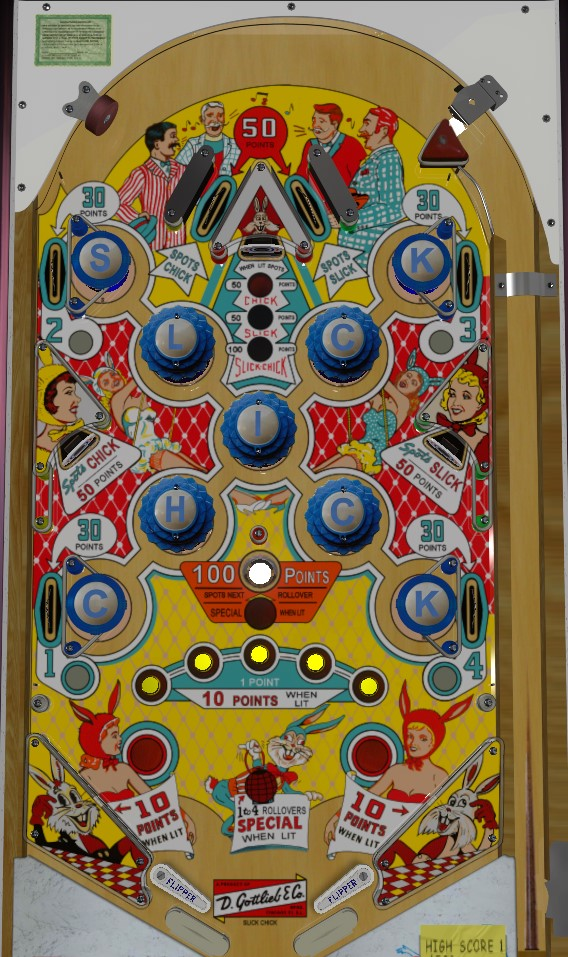

Spell Slick Chick as many times as possible. You can do this by hitting 1-point bumpers in spelling order, but it's more efficient to have entire words Slick or Chick spotted for you at the top lanes, top standup target, or lower left and right standup targets. Spotting Slick or Chick scores 50 points; spotting both, which happens at every 3rd hit of the top standup target, scores 100 points. Each spelling of Slick Chick lights a rollover button at the bottom of the table for 10 points instead of 1. At 4 spellings of Slick Chick, the slingshots score 10 points instead of 1. At 5 spellings of Slick Chick, the gobble hole in the center of the table scores a Special, which can only be a free game.
Rollover lanes around the table are numbered 1 (lower left), 2 (upper left), 3 (upper right), and 4 (lower right). These lanes always score 30 points. Make the next lane in 1-2-3-4 order to unlight it. Unlighting all 4 makes it so that all 1-4 lanes for the rest of the game score a Special. The gobble hole scores 100 points and spots the next number in the 1-2-3-4 sequence if it has not already been completed. The gobble hole also ends the current ball in play, so it should generally be avoided unless you desperately need the 100 points. There are no in or out lanes, just flippers and slingshots. Mostly-underneath the flippers are rubber posts that can help keep a ball in play if it just barely misses the flippers.
